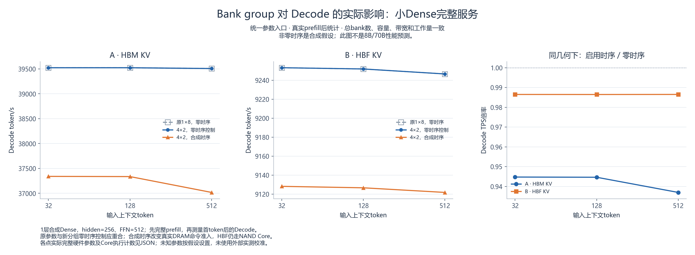

HBF/HBM：内部仿真实验与审计结果
机制检查与研究覆盖分别报告。当前完整服务结果 18 行，配置或物理容量拒绝 0 行；其余为微基准或明确假设下的分析。所有数值均为仿真或条件估计，尚无独立硬件预测精度验证。
完整复跑：python -B scripts/hbf_hbm_experiments.py --output-dir artifacts/hbf_hbm --workers 4；生成图表：python -B scripts/plot_hbf_hbm_results.py --update-report。使用项目虚拟环境。时间原始单位 ns，带宽十进制 GB/s，容量 bytes；表中延迟已转换为 ms/µs。
修改和覆盖范围
| 实验组 | 检查状态 | 结果行数 | 检查支持的范围 |
|---|---|---|---|
| 统一参数入口下的 Bank group Decode 对照 | passed | 18 | 同一小Dense完整服务、真实prefill后Decode；旧几何与新几何零时序控制及非零时序对照 |
计算、访存与迁移的职责边界
GPU侧继续使用聚合简化模型估算计算和启动时间。上层算子与KV管理器生成实际读写请求；HBM统一交给DRAM Core处理地址、行/Bank、命令和数据通道、排队与完成时间；HBF交给NAND Core处理页读取与编程。KV迁移按源内存读取、链路传输、目标内存写入的依赖顺序执行。调度器组合这些依赖与重叠，不再额外叠加HBM聚合带宽耗时。
本报告 18 / 18 个完整服务点均记录到实际HBM DRAM Core执行。证据来自持久在线服务运行时的实际提交，排除规划预演、隔离重放与服务启动前初始化。其中 9 点还记录到实际HBF/SSD NAND Core执行。逐点JSON中的 core_execution_audit 保存物理owner、Core类型、读写字节及prefill/decode分组。主机DDR与HBM分别计数。
本次所选检查：存在未通过项，请看各组明细。真实外部数据校准依用户指示暂不纳入完成条件；检查通过表示实现和所述实验通过，不表示任何硬件预测已经校准。
| 原审计项 | 当前状态 | 实际完成范围 |
|---|
合并后的逐模型执行范围
| 模型ID | 实际执行模式 | 执行/拒绝点数 | 上下文 | 完整算子服务 |
|---|
主要结果图

完整服务性能
第15组使用显式1/2/4 GPU，其余组按各行GPU数计。每GPU TPS = 节点TPS/GPU数；多GPU节点吞吐来自真实并行任务与通信调度。
TPS 是每秒输出 token 数；goodput 是满足延迟目标的合格 TPS。TTFT 是首 token 等待时间，TPOT 是每请求首 token 后的平均输出间隔，TBT 是相邻 token 的间隔，E2E 是请求总时延；SLO 指本实验设定的延迟目标。每项延迟均保留独立样本数。
主 TPS 和 goodput 使用最早请求到达至仿真结束的同一窗口，含请求在初始化期间的等待；另列初始化后 TPS。TTFT/E2E 均从各请求到达起算。下表prefill和decode列均以主请求窗口为分母，表示各阶段token对整段请求的速率贡献，不是独立Decode TPS。独立Decode窗口见上方第19组；原有batch忙时速率仍单独保存在JSON。
A=HBM 权重与 KV；B=全部 KV 在 HBF；C=HBM 活跃 KV/HBF 冷 KV；D=HBF 权重/HBM KV。具体目标与控制面实际放置分别保存在结果中。对照约束见每个场景；相同 GPU 或相同槽数不代表相同购置成本和面积。
补充对照 E=主机DRAM中的KV，F=NVMe SSD冷KV，G=CXL连接DRAM中的KV。第9组G是单GPU本地对照，第15组另建多GPU共享池和机架网络变体，路径假设分别保存。
当前未提供真实 token-ID 轨迹；解析 embedding 的远端读取若超过权重表大小，使用明确的循环地址假设保留重复读流量，不扩大权重表驻留容量。不能据此声称复现了真实 token 局部性。
组 02：1 层 hidden=256、4 Q 头/2 KV 头、INT8 小 Dense，每请求 4 输出 token。HBM/HBF 端口峰值同为 1600 GB/s，HBM 效率为 75%；HBF 默认 4µs 读、75µs program、16KiB 页、64 个有效并行单元、16GB/s 写。内部通道按非瓶颈参数假设，3TB/s 端口扫描仍受 1.6TB/s 互联限制。named 模型和研究扩展使用各行实际参数，不能套用此小模型说明。
| ID / 架构 | 模型 | 输入/输出 | 请求数 | 完成/拒绝 | 并发上限/实际batch | TPS | 初始化后TPS | 合格TPS | prefill token/s | decode token/s | 初始化µs |
|---|---|---|---|---|---|---|---|---|---|---|---|
| bank-group/published_hbm_serving_legacy_zero/32/A_hbm_only / A_hbm_only | synthetic-small-dense | 32/8 | 1 | 1/0 | 1/1 | 38,201.73 | 39,440.12 | 38,201.73 | 152,806.91 | 33,426.51 | 6.575 |
| bank-group/published_hbm_serving_legacy_zero/32/B_all_kv_hbf / B_all_kv_hbf | synthetic-small-dense | 32/8 | 1 | 1/0 | 1/1 | 9,178.82 | 9,248.60 | 9,178.82 | 36,715.28 | 8,031.47 | 6.575 |
| bank-group/published_hbm_serving_group_geometry_zero/32/A_hbm_only / A_hbm_only | synthetic-small-dense | 32/8 | 1 | 1/0 | 1/1 | 38,201.73 | 39,440.12 | 38,201.73 | 152,806.91 | 33,426.51 | 6.575 |
| bank-group/published_hbm_serving_group_geometry_zero/32/B_all_kv_hbf / B_all_kv_hbf | synthetic-small-dense | 32/8 | 1 | 1/0 | 1/1 | 9,178.82 | 9,248.60 | 9,178.82 | 36,715.28 | 8,031.47 | 6.575 |
| bank-group/published_hbm_serving/32/A_hbm_only / A_hbm_only | synthetic-small-dense | 32/8 | 1 | 1/0 | 1/1 | 36,136.01 | 37,242.15 | 36,136.01 | 144,544.03 | 31,619.01 | 6.575 |
| bank-group/published_hbm_serving/32/B_all_kv_hbf / B_all_kv_hbf | synthetic-small-dense | 32/8 | 1 | 1/0 | 1/1 | 9,054.46 | 9,122.35 | 9,054.46 | 36,217.82 | 7,922.65 | 6.575 |
| bank-group/published_hbm_serving_legacy_zero/128/A_hbm_only / A_hbm_only | synthetic-small-dense | 128/8 | 1 | 1/0 | 1/1 | 37,681.72 | 38,886.09 | 37,681.72 | 602,907.47 | 32,971.50 | 6.575 |
| bank-group/published_hbm_serving_legacy_zero/128/B_all_kv_hbf / B_all_kv_hbf | synthetic-small-dense | 128/8 | 1 | 1/0 | 1/1 | 9,178.58 | 9,248.35 | 9,178.58 | 146,857.31 | 8,031.26 | 6.575 |
| bank-group/published_hbm_serving_group_geometry_zero/128/A_hbm_only / A_hbm_only | synthetic-small-dense | 128/8 | 1 | 1/0 | 1/1 | 37,681.72 | 38,886.09 | 37,681.72 | 602,907.47 | 32,971.50 | 6.575 |
| bank-group/published_hbm_serving_group_geometry_zero/128/B_all_kv_hbf / B_all_kv_hbf | synthetic-small-dense | 128/8 | 1 | 1/0 | 1/1 | 9,178.58 | 9,248.35 | 9,178.58 | 146,857.31 | 8,031.26 | 6.575 |
| bank-group/published_hbm_serving/128/A_hbm_only / A_hbm_only | synthetic-small-dense | 128/8 | 1 | 1/0 | 1/1 | 35,743.32 | 36,825.20 | 35,743.32 | 571,893.17 | 31,275.41 | 6.575 |
| bank-group/published_hbm_serving/128/B_all_kv_hbf / B_all_kv_hbf | synthetic-small-dense | 128/8 | 1 | 1/0 | 1/1 | 9,060.02 | 9,127.99 | 9,060.02 | 144,960.31 | 7,927.52 | 6.575 |
| bank-group/published_hbm_serving_legacy_zero/512/A_hbm_only / A_hbm_only | synthetic-small-dense | 512/8 | 1 | 1/0 | 1/1 | 35,335.73 | 36,392.71 | 35,335.73 | 2,261,486.88 | 30,918.77 | 6.575 |
| bank-group/published_hbm_serving_legacy_zero/512/B_all_kv_hbf / B_all_kv_hbf | synthetic-small-dense | 512/8 | 1 | 1/0 | 1/1 | 8,987.07 | 9,053.95 | 8,987.07 | 575,172.33 | 7,863.68 | 6.575 |
| bank-group/published_hbm_serving_group_geometry_zero/512/A_hbm_only / A_hbm_only | synthetic-small-dense | 512/8 | 1 | 1/0 | 1/1 | 35,335.73 | 36,392.71 | 35,335.73 | 2,261,486.88 | 30,918.77 | 6.575 |
| bank-group/published_hbm_serving_group_geometry_zero/512/B_all_kv_hbf / B_all_kv_hbf | synthetic-small-dense | 512/8 | 1 | 1/0 | 1/1 | 8,987.07 | 9,053.95 | 8,987.07 | 575,172.33 | 7,863.68 | 6.575 |
| bank-group/published_hbm_serving/512/A_hbm_only / A_hbm_only | synthetic-small-dense | 512/8 | 1 | 1/0 | 1/1 | 33,166.95 | 34,096.45 | 33,166.95 | 2,122,684.80 | 29,021.08 | 6.575 |
| bank-group/published_hbm_serving/512/B_all_kv_hbf / B_all_kv_hbf | synthetic-small-dense | 512/8 | 1 | 1/0 | 1/1 | 8,857.96 | 8,922.93 | 8,857.96 | 566,909.59 | 7,750.72 | 6.575 |
相同模型、请求和并发下的 B/A
比值小于 1 表示全部 KV 放入 HBF 后吞吐下降。只能解释表中给定假设和窗口，不能外推为 HBF 的普适加速倍数。
| 模型 | 上下文 | 并发 | A TPS | B TPS | B/A | A合格TPS | B合格TPS |
|---|
所有分位数与样本数
下表是合成轨迹的经验分位数，插值不会产生额外样本；即使列出 p999，也不构成真实生产尾延迟保证。
| ID | 指标 | 样本数 | p50 ms | p95 ms | p99 ms | p999 ms |
|---|---|---|---|---|---|---|
| bank-group/published_hbm_serving_legacy_zero/32/A_hbm_only | ttft_ns | 1 | 0.0323 | 0.0323 | 0.0323 | 0.0323 |
| bank-group/published_hbm_serving_legacy_zero/32/A_hbm_only | tpot_ns | 1 | 0.0253 | 0.0253 | 0.0253 | 0.0253 |
| bank-group/published_hbm_serving_legacy_zero/32/A_hbm_only | tbt_ns | 7 | 0.0253 | 0.0253 | 0.0253 | 0.0253 |
| bank-group/published_hbm_serving_legacy_zero/32/A_hbm_only | e2e_ns | 1 | 0.2094 | 0.2094 | 0.2094 | 0.2094 |
| bank-group/published_hbm_serving_legacy_zero/32/B_all_kv_hbf | ttft_ns | 1 | 0.1151 | 0.1151 | 0.1151 | 0.1151 |
| bank-group/published_hbm_serving_legacy_zero/32/B_all_kv_hbf | tpot_ns | 1 | 0.1081 | 0.1081 | 0.1081 | 0.1081 |
| bank-group/published_hbm_serving_legacy_zero/32/B_all_kv_hbf | tbt_ns | 7 | 0.1081 | 0.1081 | 0.1081 | 0.1081 |
| bank-group/published_hbm_serving_legacy_zero/32/B_all_kv_hbf | e2e_ns | 1 | 0.8716 | 0.8716 | 0.8716 | 0.8716 |
| bank-group/published_hbm_serving_group_geometry_zero/32/A_hbm_only | ttft_ns | 1 | 0.0323 | 0.0323 | 0.0323 | 0.0323 |
| bank-group/published_hbm_serving_group_geometry_zero/32/A_hbm_only | tpot_ns | 1 | 0.0253 | 0.0253 | 0.0253 | 0.0253 |
| bank-group/published_hbm_serving_group_geometry_zero/32/A_hbm_only | tbt_ns | 7 | 0.0253 | 0.0253 | 0.0253 | 0.0253 |
| bank-group/published_hbm_serving_group_geometry_zero/32/A_hbm_only | e2e_ns | 1 | 0.2094 | 0.2094 | 0.2094 | 0.2094 |
| bank-group/published_hbm_serving_group_geometry_zero/32/B_all_kv_hbf | ttft_ns | 1 | 0.1151 | 0.1151 | 0.1151 | 0.1151 |
| bank-group/published_hbm_serving_group_geometry_zero/32/B_all_kv_hbf | tpot_ns | 1 | 0.1081 | 0.1081 | 0.1081 | 0.1081 |
| bank-group/published_hbm_serving_group_geometry_zero/32/B_all_kv_hbf | tbt_ns | 7 | 0.1081 | 0.1081 | 0.1081 | 0.1081 |
| bank-group/published_hbm_serving_group_geometry_zero/32/B_all_kv_hbf | e2e_ns | 1 | 0.8716 | 0.8716 | 0.8716 | 0.8716 |
| bank-group/published_hbm_serving/32/A_hbm_only | ttft_ns | 1 | 0.0339 | 0.0339 | 0.0339 | 0.0339 |
| bank-group/published_hbm_serving/32/A_hbm_only | tpot_ns | 1 | 0.0268 | 0.0268 | 0.0268 | 0.0268 |
| bank-group/published_hbm_serving/32/A_hbm_only | tbt_ns | 7 | 0.0268 | 0.0268 | 0.0268 | 0.0268 |
| bank-group/published_hbm_serving/32/A_hbm_only | e2e_ns | 1 | 0.2214 | 0.2214 | 0.2214 | 0.2214 |
| bank-group/published_hbm_serving/32/B_all_kv_hbf | ttft_ns | 1 | 0.1167 | 0.1167 | 0.1167 | 0.1167 |
| bank-group/published_hbm_serving/32/B_all_kv_hbf | tpot_ns | 1 | 0.1096 | 0.1096 | 0.1096 | 0.1096 |
| bank-group/published_hbm_serving/32/B_all_kv_hbf | tbt_ns | 7 | 0.1096 | 0.1096 | 0.1096 | 0.1096 |
| bank-group/published_hbm_serving/32/B_all_kv_hbf | e2e_ns | 1 | 0.8835 | 0.8835 | 0.8835 | 0.8835 |
| bank-group/published_hbm_serving_legacy_zero/128/A_hbm_only | ttft_ns | 1 | 0.0352 | 0.0352 | 0.0352 | 0.0352 |
| bank-group/published_hbm_serving_legacy_zero/128/A_hbm_only | tpot_ns | 1 | 0.0253 | 0.0253 | 0.0253 | 0.0253 |
| bank-group/published_hbm_serving_legacy_zero/128/A_hbm_only | tbt_ns | 7 | 0.0253 | 0.0253 | 0.0253 | 0.0253 |
| bank-group/published_hbm_serving_legacy_zero/128/A_hbm_only | e2e_ns | 1 | 0.2123 | 0.2123 | 0.2123 | 0.2123 |
| bank-group/published_hbm_serving_legacy_zero/128/B_all_kv_hbf | ttft_ns | 1 | 0.1150 | 0.1150 | 0.1150 | 0.1150 |
| bank-group/published_hbm_serving_legacy_zero/128/B_all_kv_hbf | tpot_ns | 1 | 0.1081 | 0.1081 | 0.1081 | 0.1081 |
| bank-group/published_hbm_serving_legacy_zero/128/B_all_kv_hbf | tbt_ns | 7 | 0.1081 | 0.1081 | 0.1081 | 0.1081 |
| bank-group/published_hbm_serving_legacy_zero/128/B_all_kv_hbf | e2e_ns | 1 | 0.8716 | 0.8716 | 0.8716 | 0.8716 |
| bank-group/published_hbm_serving_group_geometry_zero/128/A_hbm_only | ttft_ns | 1 | 0.0352 | 0.0352 | 0.0352 | 0.0352 |
| bank-group/published_hbm_serving_group_geometry_zero/128/A_hbm_only | tpot_ns | 1 | 0.0253 | 0.0253 | 0.0253 | 0.0253 |
| bank-group/published_hbm_serving_group_geometry_zero/128/A_hbm_only | tbt_ns | 7 | 0.0253 | 0.0253 | 0.0253 | 0.0253 |
| bank-group/published_hbm_serving_group_geometry_zero/128/A_hbm_only | e2e_ns | 1 | 0.2123 | 0.2123 | 0.2123 | 0.2123 |
| bank-group/published_hbm_serving_group_geometry_zero/128/B_all_kv_hbf | ttft_ns | 1 | 0.1150 | 0.1150 | 0.1150 | 0.1150 |
| bank-group/published_hbm_serving_group_geometry_zero/128/B_all_kv_hbf | tpot_ns | 1 | 0.1081 | 0.1081 | 0.1081 | 0.1081 |
| bank-group/published_hbm_serving_group_geometry_zero/128/B_all_kv_hbf | tbt_ns | 7 | 0.1081 | 0.1081 | 0.1081 | 0.1081 |
| bank-group/published_hbm_serving_group_geometry_zero/128/B_all_kv_hbf | e2e_ns | 1 | 0.8716 | 0.8716 | 0.8716 | 0.8716 |
| bank-group/published_hbm_serving/128/A_hbm_only | ttft_ns | 1 | 0.0363 | 0.0363 | 0.0363 | 0.0363 |
| bank-group/published_hbm_serving/128/A_hbm_only | tpot_ns | 1 | 0.0268 | 0.0268 | 0.0268 | 0.0268 |
| bank-group/published_hbm_serving/128/A_hbm_only | tbt_ns | 7 | 0.0268 | 0.0268 | 0.0268 | 0.0268 |
| bank-group/published_hbm_serving/128/A_hbm_only | e2e_ns | 1 | 0.2238 | 0.2238 | 0.2238 | 0.2238 |
| bank-group/published_hbm_serving/128/B_all_kv_hbf | ttft_ns | 1 | 0.1160 | 0.1160 | 0.1160 | 0.1160 |
| bank-group/published_hbm_serving/128/B_all_kv_hbf | tpot_ns | 1 | 0.1096 | 0.1096 | 0.1096 | 0.1096 |
| bank-group/published_hbm_serving/128/B_all_kv_hbf | tbt_ns | 7 | 0.1096 | 0.1096 | 0.1096 | 0.1096 |
| bank-group/published_hbm_serving/128/B_all_kv_hbf | e2e_ns | 1 | 0.8830 | 0.8830 | 0.8830 | 0.8830 |
| bank-group/published_hbm_serving_legacy_zero/512/A_hbm_only | ttft_ns | 1 | 0.0492 | 0.0492 | 0.0492 | 0.0492 |
| bank-group/published_hbm_serving_legacy_zero/512/A_hbm_only | tpot_ns | 1 | 0.0253 | 0.0253 | 0.0253 | 0.0253 |
| bank-group/published_hbm_serving_legacy_zero/512/A_hbm_only | tbt_ns | 7 | 0.0253 | 0.0253 | 0.0253 | 0.0253 |
| bank-group/published_hbm_serving_legacy_zero/512/A_hbm_only | e2e_ns | 1 | 0.2264 | 0.2264 | 0.2264 | 0.2264 |
| bank-group/published_hbm_serving_legacy_zero/512/B_all_kv_hbf | ttft_ns | 1 | 0.1331 | 0.1331 | 0.1331 | 0.1331 |
| bank-group/published_hbm_serving_legacy_zero/512/B_all_kv_hbf | tpot_ns | 1 | 0.1081 | 0.1081 | 0.1081 | 0.1081 |
| bank-group/published_hbm_serving_legacy_zero/512/B_all_kv_hbf | tbt_ns | 7 | 0.1081 | 0.1081 | 0.1081 | 0.1081 |
| bank-group/published_hbm_serving_legacy_zero/512/B_all_kv_hbf | e2e_ns | 1 | 0.8902 | 0.8902 | 0.8902 | 0.8902 |
| bank-group/published_hbm_serving_group_geometry_zero/512/A_hbm_only | ttft_ns | 1 | 0.0492 | 0.0492 | 0.0492 | 0.0492 |
| bank-group/published_hbm_serving_group_geometry_zero/512/A_hbm_only | tpot_ns | 1 | 0.0253 | 0.0253 | 0.0253 | 0.0253 |
| bank-group/published_hbm_serving_group_geometry_zero/512/A_hbm_only | tbt_ns | 7 | 0.0253 | 0.0253 | 0.0253 | 0.0253 |
| bank-group/published_hbm_serving_group_geometry_zero/512/A_hbm_only | e2e_ns | 1 | 0.2264 | 0.2264 | 0.2264 | 0.2264 |
| bank-group/published_hbm_serving_group_geometry_zero/512/B_all_kv_hbf | ttft_ns | 1 | 0.1331 | 0.1331 | 0.1331 | 0.1331 |
| bank-group/published_hbm_serving_group_geometry_zero/512/B_all_kv_hbf | tpot_ns | 1 | 0.1081 | 0.1081 | 0.1081 | 0.1081 |
| bank-group/published_hbm_serving_group_geometry_zero/512/B_all_kv_hbf | tbt_ns | 7 | 0.1081 | 0.1081 | 0.1081 | 0.1081 |
| bank-group/published_hbm_serving_group_geometry_zero/512/B_all_kv_hbf | e2e_ns | 1 | 0.8902 | 0.8902 | 0.8902 | 0.8902 |
| bank-group/published_hbm_serving/512/A_hbm_only | ttft_ns | 1 | 0.0521 | 0.0521 | 0.0521 | 0.0521 |
| bank-group/published_hbm_serving/512/A_hbm_only | tpot_ns | 1 | 0.0270 | 0.0270 | 0.0270 | 0.0270 |
| bank-group/published_hbm_serving/512/A_hbm_only | tbt_ns | 7 | 0.0270 | 0.0270 | 0.0270 | 0.0270 |
| bank-group/published_hbm_serving/512/A_hbm_only | e2e_ns | 1 | 0.2412 | 0.2412 | 0.2412 | 0.2412 |
| bank-group/published_hbm_serving/512/B_all_kv_hbf | ttft_ns | 1 | 0.1358 | 0.1358 | 0.1358 | 0.1358 |
| bank-group/published_hbm_serving/512/B_all_kv_hbf | tpot_ns | 1 | 0.1096 | 0.1096 | 0.1096 | 0.1096 |
| bank-group/published_hbm_serving/512/B_all_kv_hbf | tbt_ns | 7 | 0.1096 | 0.1096 | 0.1096 | 0.1096 |
| bank-group/published_hbm_serving/512/B_all_kv_hbf | e2e_ns | 1 | 0.9031 | 0.9031 | 0.9031 | 0.9031 |
内存与迁移计数
分向有效带宽=逻辑读/写字节除以主请求窗口。算子 NAND 流量与 KV 迁移单独列出；尚未记录的队列或物理 plane 指标保持空值。有效并行单元的忙时失衡不等于真实物理 plane 失衡。
| ID | 逻辑读GB/s | 逻辑写GB/s | 访问页数 | 每次访问页载荷率 | 读取页操作 | 编程页操作 | 写放大 | host读在途峰值 | host写在途峰值 | KV迁移B | 投机接受率 |
|---|---|---|---|---|---|---|---|---|---|---|---|
| bank-group/published_hbm_serving_legacy_zero/32/A_hbm_only | — | — | — | — | — | — | — | — | — | 0 | — |
| bank-group/published_hbm_serving_legacy_zero/32/B_all_kv_hbf | 0.083 | 0.011 | 32 | 0.158 | 32 | 16 | 26.256 | 2 | 2 | 0 | — |
| bank-group/published_hbm_serving_group_geometry_zero/32/A_hbm_only | — | — | — | — | — | — | — | — | — | 0 | — |
| bank-group/published_hbm_serving_group_geometry_zero/32/B_all_kv_hbf | 0.083 | 0.011 | 32 | 0.158 | 32 | 16 | 26.256 | 2 | 2 | 0 | — |
| bank-group/published_hbm_serving/32/A_hbm_only | — | — | — | — | — | — | — | — | — | 0 | — |
| bank-group/published_hbm_serving/32/B_all_kv_hbf | 0.082 | 0.011 | 32 | 0.158 | 32 | 16 | 26.256 | 2 | 2 | 0 | — |
| bank-group/published_hbm_serving_legacy_zero/128/A_hbm_only | — | — | — | — | — | — | — | — | — | 0 | — |
| bank-group/published_hbm_serving_legacy_zero/128/B_all_kv_hbf | 0.309 | 0.040 | 46 | 0.403 | 44 | 16 | 7.585 | 2 | 2 | 0 | — |
| bank-group/published_hbm_serving_group_geometry_zero/128/A_hbm_only | — | — | — | — | — | — | — | — | — | 0 | — |
| bank-group/published_hbm_serving_group_geometry_zero/128/B_all_kv_hbf | 0.309 | 0.040 | 46 | 0.403 | 44 | 16 | 7.585 | 2 | 2 | 0 | — |
| bank-group/published_hbm_serving/128/A_hbm_only | — | — | — | — | — | — | — | — | — | 0 | — |
| bank-group/published_hbm_serving/128/B_all_kv_hbf | 0.305 | 0.039 | 46 | 0.403 | 44 | 16 | 7.585 | 2 | 2 | 0 | — |
| bank-group/published_hbm_serving_legacy_zero/512/A_hbm_only | — | — | — | — | — | — | — | — | — | 0 | — |
| bank-group/published_hbm_serving_legacy_zero/512/B_all_kv_hbf | 1.186 | 0.149 | 100 | 0.725 | 92 | 22 | 2.713 | 2 | 2 | 0 | — |
| bank-group/published_hbm_serving_group_geometry_zero/512/A_hbm_only | — | — | — | — | — | — | — | — | — | 0 | — |
| bank-group/published_hbm_serving_group_geometry_zero/512/B_all_kv_hbf | 1.186 | 0.149 | 100 | 0.725 | 92 | 22 | 2.713 | 2 | 2 | 0 | — |
| bank-group/published_hbm_serving/512/A_hbm_only | — | — | — | — | — | — | — | — | — | 0 | — |
| bank-group/published_hbm_serving/512/B_all_kv_hbf | 1.169 | 0.147 | 100 | 0.725 | 92 | 22 | 2.713 | 2 | 2 | 0 | — |
host 在途峰值按每个设备在接纳请求时采样，包含当前请求；缓冲写在主机确认时结束。它不是 NAND 页级读队列或编程队列深度。页载荷率是逻辑 payload/每次访问页跨度，重复访问重复计入，非唯一驻留容量利用率。
| ID | 观测到的通道数 | 平均忙时比例 | 最高忙时比例 | 观测到的有效服务单元 | 有效单元忙时变异系数 |
|---|---|---|---|---|---|
| bank-group/published_hbm_serving_legacy_zero/32/B_all_kv_hbf | 2 | 2.82e-07 | 2.82e-07 | 2 | 0.000 |
| bank-group/published_hbm_serving_group_geometry_zero/32/B_all_kv_hbf | 2 | 2.82e-07 | 2.82e-07 | 2 | 0.000 |
| bank-group/published_hbm_serving/32/B_all_kv_hbf | 2 | 2.78e-07 | 2.78e-07 | 2 | 0.000 |
| bank-group/published_hbm_serving_legacy_zero/128/B_all_kv_hbf | 4 | 1.76e-07 | 2.47e-07 | 4 | 0.689 |
| bank-group/published_hbm_serving_group_geometry_zero/128/B_all_kv_hbf | 4 | 1.76e-07 | 2.47e-07 | 4 | 0.689 |
| bank-group/published_hbm_serving/128/B_all_kv_hbf | 4 | 1.74e-07 | 2.44e-07 | 4 | 0.689 |
| bank-group/published_hbm_serving_legacy_zero/512/B_all_kv_hbf | 10 | 1.31e-07 | 2.42e-07 | 10 | 0.940 |
| bank-group/published_hbm_serving_group_geometry_zero/512/B_all_kv_hbf | 10 | 1.31e-07 | 2.42e-07 | 10 | 0.940 |
| bank-group/published_hbm_serving/512/B_all_kv_hbf | 10 | 1.29e-07 | 2.38e-07 | 10 | 0.940 |
上述有效服务单元只汇总被观察到的资源。第14组另启用真实物理plane和NAND页队列观测，包含闲置plane；未启用详细观测的其他行保留空值，不能混用两类指标。
各组机制、微基准及扫描
统一参数入口下的 Bank group Decode 对照
下列是小型合成Dense模型的完整服务，先执行真实prefill，再测Decode。旧1×8分组零时序、4×2分组零时序控制、4×2非零时序三组保持总bank数及其余硬件一致。参数统一由物理参数目录提供并经过同一校验接口，不在实验脚本临时生成。
| 上下文 | KV放置 | 原参数Decode TPS | 分组控制Decode TPS | 启用组时序Decode TPS | 时序/控制 |
|---|---|---|---|---|---|
| 32 | A_hbm_only | 39,524.81 | 39,524.81 | 37,340.79 | 0.94474 |
| 32 | B_all_kv_hbf | 9,253.19 | 9,253.19 | 9,128.20 | 0.98649 |
| 128 | A_hbm_only | 39,524.81 | 39,524.81 | 37,336.60 | 0.94464 |
| 128 | B_all_kv_hbf | 9,251.88 | 9,251.88 | 9,126.67 | 0.98647 |
| 512 | A_hbm_only | 39,508.44 | 39,508.44 | 37,018.33 | 0.93697 |
| 512 | B_all_kv_hbf | 9,246.62 | 9,246.62 | 9,121.80 | 0.98650 |
实际执行Core持有的完整HBM配置（每个参数变体一份）
{
"published_hbm_serving_legacy_zero": {
"hbm0.hbm_fabric": {
"kind": "HBM",
"generation": "",
"channels": 8,
"subchannels_per_channel": 1,
"pseudo_channels_per_channel": 2,
"stacks": 1,
"dies_per_stack": 1,
"ranks_per_channel": 1,
"bank_groups_per_rank": 1,
"banks_per_group": 8,
"rows_per_bank": 524288,
"row_bytes": 8192,
"burst_bytes": 64,
"data_width_bits": 64,
"data_rate_mt_s": 3200.0,
"effective_pin_data_rate_gbps": null,
"bandwidth_input_mode": "bandwidth",
"lane_bandwidth_gb_s": null,
"interface_bandwidth_gb_s": 1600.0,
"read_bandwidth_gb_s": 1600.0,
"write_bandwidth_gb_s": 1600.0,
"data_lanes": null,
"interleave_bytes": null,
"open_ns": 14.0,
"close_ns": 14.0,
"read_latency_ns": 14.0,
"write_latency_ns": 12.0,
"burst_interval_ns": 0.0,
"read_recovery_ns": 0.0,
"write_recovery_ns": 15.0,
"read_to_write_ns": 0.0,
"write_to_read_ns": 0.0,
"capacity_bytes": 549755813888,
"max_outstanding_requests": 64,
"max_expanded_segments": 1000000,
"metadata": {
"parameter_basis": "synthetic_research_assumptions",
"configuration_scope": "explicit_physical_memory_research",
"geometry_basis": "equivalent geometry; not a vendor die or bank specification",
"timing_basis": "legacy zero bank-group timing control; other array timings are analytical assumptions",
"published_input_scope": "capacity, stack count and directional bandwidth are caller-selected published inputs; geometry and unspecified timing remain explicit synthetic assumptions",
"physical_config_profile_id": "published_hbm_serving_legacy_zero",
"physical_config_override_fields": [
"capacity_bytes",
"interface_bandwidth_gb_s",
"read_bandwidth_gb_s",
"write_bandwidth_gb_s"
],
"physical_config_geometry_expansion": true,
"bank_resource_prefix": "hbm0.hbm_fabric:dram:bank",
"command_resource_prefix": "hbm0.hbm_fabric:dram:command",
"data_resource_prefix": "hbm0.hbm_fabric:dram:data"
},
"column_same_group_ns": 0.0,
"column_different_group_ns": 0.0,
"activate_same_group_ns": 0.0,
"activate_different_group_ns": 0.0,
"four_activate_window_ns": 0.0,
"write_to_read_same_group_ns": 0.0,
"write_to_read_different_group_ns": 0.0
}
},
"published_hbm_serving_group_geometry_zero": {
"hbm0.hbm_fabric": {
"kind": "HBM",
"generation": "",
"channels": 8,
"subchannels_per_channel": 1,
"pseudo_channels_per_channel": 2,
"stacks": 1,
"dies_per_stack": 1,
"ranks_per_channel": 1,
"bank_groups_per_rank": 4,
"banks_per_group": 2,
"rows_per_bank": 524288,
"row_bytes": 8192,
"burst_bytes": 64,
"data_width_bits": 64,
"data_rate_mt_s": 3200.0,
"effective_pin_data_rate_gbps": null,
"bandwidth_input_mode": "bandwidth",
"lane_bandwidth_gb_s": null,
"interface_bandwidth_gb_s": 1600.0,
"read_bandwidth_gb_s": 1600.0,
"write_bandwidth_gb_s": 1600.0,
"data_lanes": null,
"interleave_bytes": null,
"open_ns": 14.0,
"close_ns": 14.0,
"read_latency_ns": 14.0,
"write_latency_ns": 12.0,
"burst_interval_ns": 0.0,
"read_recovery_ns": 0.0,
"write_recovery_ns": 15.0,
"read_to_write_ns": 0.0,
"write_to_read_ns": 0.0,
"capacity_bytes": 549755813888,
"max_outstanding_requests": 64,
"max_expanded_segments": 1000000,
"metadata": {
"parameter_basis": "synthetic_research_assumptions",
"configuration_scope": "explicit_physical_memory_research",
"geometry_basis": "equivalent geometry; not a vendor die or bank specification",
"timing_basis": "legacy zero bank-group timing control; other array timings are analytical assumptions",
"published_input_scope": "capacity, stack count and directional bandwidth are caller-selected published inputs; geometry and unspecified timing remain explicit synthetic assumptions",
"physical_config_profile_id": "published_hbm_serving_group_geometry_zero",
"physical_config_override_fields": [
"capacity_bytes",
"interface_bandwidth_gb_s",
"read_bandwidth_gb_s",
"write_bandwidth_gb_s"
],
"physical_config_geometry_expansion": true,
"bank_resource_prefix": "hbm0.hbm_fabric:dram:bank",
"command_resource_prefix": "hbm0.hbm_fabric:dram:command",
"data_resource_prefix": "hbm0.hbm_fabric:dram:data"
},
"column_same_group_ns": 0.0,
"column_different_group_ns": 0.0,
"activate_same_group_ns": 0.0,
"activate_different_group_ns": 0.0,
"four_activate_window_ns": 0.0,
"write_to_read_same_group_ns": 0.0,
"write_to_read_different_group_ns": 0.0
}
},
"published_hbm_serving": {
"hbm0.hbm_fabric": {
"kind": "HBM",
"generation": "",
"channels": 8,
"subchannels_per_channel": 1,
"pseudo_channels_per_channel": 2,
"stacks": 1,
"dies_per_stack": 1,
"ranks_per_channel": 1,
"bank_groups_per_rank": 4,
"banks_per_group": 2,
"rows_per_bank": 524288,
"row_bytes": 8192,
"burst_bytes": 64,
"data_width_bits": 64,
"data_rate_mt_s": 3200.0,
"effective_pin_data_rate_gbps": null,
"bandwidth_input_mode": "bandwidth",
"lane_bandwidth_gb_s": null,
"interface_bandwidth_gb_s": 1600.0,
"read_bandwidth_gb_s": 1600.0,
"write_bandwidth_gb_s": 1600.0,
"data_lanes": null,
"interleave_bytes": null,
"open_ns": 14.0,
"close_ns": 14.0,
"read_latency_ns": 14.0,
"write_latency_ns": 12.0,
"burst_interval_ns": 0.0,
"read_recovery_ns": 0.0,
"write_recovery_ns": 15.0,
"read_to_write_ns": 0.0,
"write_to_read_ns": 0.0,
"capacity_bytes": 549755813888,
"max_outstanding_requests": 64,
"max_expanded_segments": 1000000,
"metadata": {
"parameter_basis": "synthetic_research_assumptions",
"configuration_scope": "explicit_physical_memory_research",
"geometry_basis": "equivalent geometry; not a vendor die or bank specification",
"timing_basis": "synthetic bank-group timings in ns: column 4/1, ACT 8/2, four-ACT 16, WRITE-to-READ 4/2; not JEDEC or vendor calibration",
"bank_group_timing_assumptions": [
"Same-group commands are more constrained than different-group commands: column spacing 4/1 ns represents shared internal group resources.",
"ACT spacing is 8/2 ns for same/different groups, with at most four ACT commands per 16 ns window in one stack/die/lane/rank scope.",
"WRITE-to-READ 4/2 ns starts at the end of the write data, not at its command start; data-bus turnaround remains a separate constraint.",
"These modest integer intervals form a reproducible internal sensitivity assumption; they are not measured timings or a JEDEC device specification."
],
"published_input_scope": "capacity, stack count and directional bandwidth are caller-selected published inputs; geometry and unspecified timing remain explicit synthetic assumptions",
"physical_config_profile_id": "published_hbm_serving",
"physical_config_override_fields": [
"capacity_bytes",
"interface_bandwidth_gb_s",
"read_bandwidth_gb_s",
"write_bandwidth_gb_s"
],
"physical_config_geometry_expansion": true,
"bank_resource_prefix": "hbm0.hbm_fabric:dram:bank",
"command_resource_prefix": "hbm0.hbm_fabric:dram:command",
"data_resource_prefix": "hbm0.hbm_fabric:dram:data"
},
"column_same_group_ns": 4.0,
"column_different_group_ns": 1.0,
"activate_same_group_ns": 8.0,
"activate_different_group_ns": 2.0,
"four_activate_window_ns": 16.0,
"write_to_read_same_group_ns": 4.0,
"write_to_read_different_group_ns": 2.0
}
}
}非零参数为明确的合理合成假设，不是实测HBM参数。该精确逐burst实验未扩展到8B/70B，不能把这里的倍率外推给大模型。
小Dense为1层256 hidden/512 FFN的合成模型，不是8B/70B性能预测。；未知组时序采用统一参数目录中的明确合成假设，未校准厂商器件。；只改变分组和显式时序；总bank数量、容量、带宽、GPU、模型及工作量保持一致。；启用组时序时使用精确逐burst路径，大模型的相同矩阵本轮未执行。；旧全零时序是有意设置的对照，不代表器件没有组级约束。
检查明细
{
"all_requested_points_executed": true,
"actual_core_paths_verified": true,
"real_prefill_and_pure_decode": true,
"fixed_output_length": true,
"same_inventory": true,
"geometry_only_control_preserves_timing": true,
"all_enabled_hbm_transactions_use_group_timing": true,
"controls_have_group_timing_disabled": true,
"actual_parameters_recorded": true
}明确假设下的购置成本、面积及长期磨损敏感性
本次所选实验未生成经济/长期敏感性结果。
本阶段范围与长期研究边界
| 项目 | 状态 | 实际限制 |
|---|
完整服务、结构专属物理探针和条件公式分别标记。文献参数化不等于论文完整复现；未启用的复杂原生算子不会用其他模型更名冒充。所有结论限定于实际运行的模型、参数和窗口。